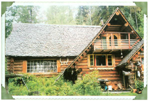
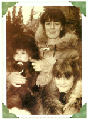
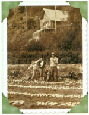
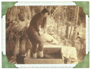
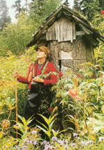
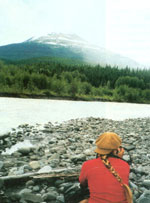
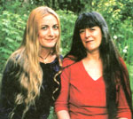

Firsthand: Reports From The Field
The author recounts her years of living as a self-described "wilderness mother" in British Columbia.
By Deanna Kawatski
October/November 2003
Our Wilderness Homestead Revisited
Between 1991 and 1996, Deanna Kawatski wrote regularly for Mother Earth News, sharing her homesteading wisdom and experiences. Deanna spent almost 15 years as a self-described "wilderness mother," in British Columbia, living in a log cabin inaccessible by road and 120 miles from the nearest town. Deanna and her husband, Jay, lived without electricity, grew their own food and even delivered their first child, Natalia, by themselves. When Jay and Deanna separated, Deanna and their two children moved to a more populous part of British Columbia. Last August, she and Natalia made a trip north to visit their former home. -MOTHER
Why am I going? What can I possibly achieve by visiting the wilderness homestead my children and I left 10 years ago?
To get there, my daughter, Natalia, and I endure a 22-hour bus marathon from Shuswap Lake to Kitwanga, the northernmost Greyhound bus stop in northwestern British Columbia. Natalia was born and lived her first 12 years north of Kitwanga, in the woods to which we now travel.
Natalia isn't only visiting our past; she's also staking a claim for her future. She intends to spend regular intervals living in her childhood home. Since our departure, a decade ago, a series of renters have drifted through our old homestead, but it has been empty for more than a year. Now it is August and the height of bear season. We have no idea what we will find when we hike in.
We catch a ride the remaining 120 miles north of Kitwanga and are dropped off at an old logging site. Grabbing my gear and hopping from the truck, I scarcely recognize my surroundings. Time has healed the old clear-cut wound, and a profusion of birch, poplar, alder and pine trees populate what I remember as a moonscape.
The minute the truck rumbles away my heart lurches as the tall grass ahead parts and something rushes directly towards us. I blink my eyes at the sight of an exquisite red fox. Nat and I freeze, mesmerized. He bounds closer and closer until he is near enough to touch. His enormous ears are perked, and his bright, brown eyes study us with an uncanny intensity. As though trying to entice us to play, he lopes around us in a circle.
The fox is in no hurry to leave, and as Nat rearranges her pack for the hike, he performs his full repertoire of tricks. With all of my years in the bush I have never been this close to a wild fox; I can't keep my eyes off him. He scratches his ear for a bit, then drags his butt along the ground. He sinks to the clover-covered ground, rests his head on his paws and stares at me long and hard. I feel honored by his presence. Even with the string of jingle bells I tie around my ankles to alert bears of our presence, he lingers. As we hoist our packs and set out, the fox dances along behind us; when I glance back again he is gone.
We fall into a rhythm walking the two miles to where our trail plunges 400 feet into the valley. Worming our way through the lush growth, we notice frequent signs of bears. Both black bears and grizzlies inhabit this region and can be aggressive when surprised. We announce our presence by singing with vigor, "I love to go a'wandering ... " and " I gave my love a cherry that has no stone ... " Here and there huge footprints mark the mud. I grow a bit uneasy.
A breeze blows the bugs away as we clamber down the hill through the trees and thimbleberry bushes. Memories of many past hikes with my small children come to mind. "Wait for me!" rings in my ears from long ago. Now, I struggle to keep up with Nat. On the final 200-foot, ligament-snapping slope, I quiver from the exertion and with anticipation of what we will find at the bottom. Nat calls back to me through a screen of silver poplar: "I see smoke!"
"Wait for me!" I holler. Negotiating the last stretch of the hill, I obtain a clear view of the parcel of wilderness that consumed 13 years of my life.
Surprised, I spot Joe, an old family friend who sometimes checks on the place. He's waiting for us in the front yard, spry at 66 in his T-shirt, sweat pants and gumboots; we greet each other warmly.
I survey the collapsed fence along the hill and chunks of bark strewn in front of the house. My heart sinks at the signs of neglect. The stovepipe at the back of the spruce-log house is askew; the back door is blocked by cottonwood saplings. When we lived here, we took pride in tending the house and garden. I see that wild crimson elderberries have taken up residence in front of the kitchen where pansies and forget-me-pots once bloomed.
Twisting the burl-wood doorknob, we enter the kitchen. Everything looks smaller than I remember-and dingy. I feel like I have outgrown this place.
When I moved to the bush in 1979, Jay, my former husband, had begun construction on a 12-by-16-foot cabin with a sleeping loft (not big enough to change your mind in, we always said). We lived there for five and a half years while we worked on a 21-by-34-foot, two-story log addition. Log construction was the only option, given how far we were from civilization, so we cut all our own logs. We began to live in the larger house in 1985, just after our son, Ben, was born, although we worked more years to complete the structure.
In a corner of the kitchen, Joe has rigged up a mousetrap, using a bucket, string and peanut-butter-smeared can. "I caught 30 last night," he says.
He suggests a walk to the pond. My memory of the pond is a brown muck hole: The dam had burst. The water wasgone. As we scamper down the hill we pass the wooden bear that Jay carved more than 20 years ago. Standing on the lip of the old dam, Nat and I gawk in confusion: The pond is back! We drink in the reflected view, embraced by tall swamp grass.
Venturing further east, we see where a beaver has repaired the hole in the dam by filling it with birch and poplar limbs and packing it with a mortar of mud. Nat and I cheer the work of the beaver.
We wander to the old garden site. Where once orderly rows of vegetables prospered and fed a family of four, a northern jungle now grows. In its midst we find devil's club, stinging nettle, and the valor of rhubarb, its ruddy stalks still holding strong under the siege of elderberry. A few feet away, a colony of saffron-colored day lilies proclaim their allegiance to the past, when masses of their kind bloomed in multihued glory. Near Natty Creek, which snakes the length of the clearing, we find frail asparagus ferns in the grasp of fecund wild growth. As we fight our way to the most westerly part of the garden, the mosquitoes swell in numbers. Here, a healthy patch of comfrey still sprawls in the grass among cow parsnips. I am touched to see that nature has allowed a few remnants of our past life to remain.
Joe leaves in the evening, and knowing that we have only five days here, Natalia and I decide to ignore our watch es and descend back into sacred time, the endless cycle of seasons and nature, unfazed by man's time machines.
The next day is overcast. Every nook and cranny of the house is filthy. Nat scampers around like a squirrel, sweeping, scrubbing and straightening. I yank the plastic storm window from above the sink, and loathing dirty windowsills, I scrub this one where I used to set fresh raspberry and huckleberry pies to cool. Perpetually seized by scenes from the past, I see a tiny Nat in quilted overalls and a bright sweater dancing down the giant cottonwood-crowded trail, and 2-year-old Ben, in royal blue velour, high-stepping it across the pine-plank floor.
We take a break from cleaning and amble to the creek with buckets to fetch water that no longer flows into the house. We harvest rhubarb from the garden and set it on the wood stove to stew; the house soon fills with a nostalgic aroma. Nat and I laugh a lot and tears also fall for what was lost, for how things might have been. No matter what, we were lucky to have experienced a life about which most people only dream. We achieved a substantial degree of self-sufficiency in a peaceful and wild setting, unencumbered by civilization.
Later in the afternoon, we realize that no visit to the valley would be complete without a hike to the Nmgunsaw River. For 13 years it flowed through my dreams, and in summer it lured us out to play. Just beyond the garden we encounter a new stream and cross it on a network of slippery logs. Quickly we become engulfed in wild growth; the acrid smell of cow parsnips and devil's club fills our nostrils. I recognize remnants of the old path beneath my feet. Coming out of the timber, we greet the mountains on the south side of the Ningunsaw. We wind our way through fireweed and cottonwood seedlings to a carpet of fine, black sand. The green glacial water chums past, and I scan it with sober respect, remembering the summer I crossed with a sprained knee and was nearly swept away.
We wander downstream, eyeing wolf prints. I tense as we encounter bear tracks-a small set traces the lip of the river and a larger set of grizzly tracks meanders towards the jagged peaks, west across the Iskut River. Reluctantly leaving the open flat, we clamber back through the bush. As we approach the house, the hair on the back of my neck prickles at the sight of steaming, pink bear scat dropped near the garden during our walk to the river. We peer around but the visitor is gone.
In the evening Nat and I sip wild mint tea on the front porch-one of my favorite places on Earth. From this vantage point in earlier times, we observed the antics of moose, bears and wolves. Now nature has reclaimed the clear i ng in a wild way, and we stand little chance of spotting anything. The south-facing porch has grown rickety, with spots only a fool would dare stand on-it is a 40-foot drop to the creek.
I find myself "watching" my younger self. I feel the tumbling ahead of my own life even as I watch the small but determined dark-haired woman crouch to weed 200-foot rows (!) of vegetables. Two beautiful, blond children help. A tanned man with a blond beard swings the sickle and cuts golden wheat.
I see the same dark head bowed over a scrub board balanced in a tub at the edge of a creek. Her eyes lift, widen and assess the situation as a fat, black bear raises its snout and stares at her from its resting place on the hillside 8 feet away. She shouts; slowly it rises and ambles on.
Birch and cottonwood leaves now shiver around us. With a rush of emotion I feel only forgiveness and affection for who we were then. With noble intentions, we set out to create our own world and to lead a simple life of self-sufficiency and harmony with nature. And we largely achieved that.
The success of this lifestyle comes in direct proportion to the amount of energy expended. Yet how naive of us to think we could survive forever without the balancing energy of alike-minded community to help us maintain our humanity and humility. Jay and I were each other's best friend, companion and work crew. We had no neighbors, friends or family to pitch in or rescue us when times were especially challenging. Community can offer support so people don't have to grow so strong that they lose their flexibility.
What a prominent part this valley played in shaping who I am today! Since leaving, I've echoed its voice in writing two books. The lessons that I learned here-patience, perseverance, humility, reverence, a deep sense of my own purpose and a greater ca pacity to love-gave me the courage to embark upon a whole new life.
Mosquitoes sing and poke at my ears. In the distance I hear the roar of the Ningunsaw River. With a surge of insight, I understand how necessary it is for us to honor the sacred places, people and moments of our lives. In a society obsessed with "getting over it" and "getting on with it," acknowledging one's own past as a teacher is crucial to completing the circles.
I needed to return to our former home to say goodbye to my life as a wilderness mother, and to reclaim bits of my soul that I dropped on my flight out of here. But now I see: Some of my soul will remain here forever.
You can find Deanna's book, Wilderness Mother, on MOTHER'S Bookshelf, Page 120.
Mother Earth News
|
 Photos from the collection of Natalia and Deanna Kawatski The Ningunsaw homestead, summer 2002. |
 Ben perches on the hollowstumphouse built by Jay |
 Deanna, Ben & Natalia in their warm winter wear. |
|
 Natalie (shouldering a handmade yoke), Deanna, Ben and a friend admire the summer potato harvest. |
 Deanna threshes hand-cut grain, drying on the cabinwall. |
 Natalie pauses at the old stump playhouse, now overgrown but still standing. |
|
 Nat gazes at South Mountain across the Ningunsaw River |
 Summer 2002: Natalia and Deanna, daughter and mother, revisit their former wilderness home. |
|